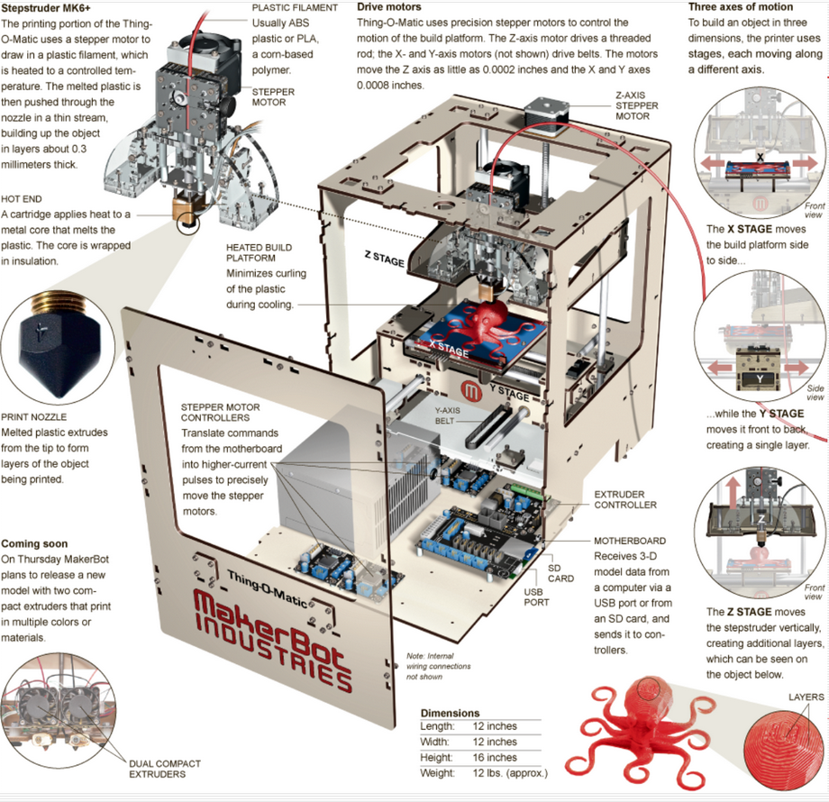

Intro to 3D Printing
What will we learn
- The basics about 3D printing
- Different types of 3D printing available
- Types of 3D printing at TXRX Labs
- Intro to thiniverse
- How to use the Replicator 2, Replicator 2x, Weistek
Expectations
- Name?
- Why are you here?
- Previous expecations?
- Specific areas of interest?
If you learn nothing else from this class...
- Look up filament printing settings (on filament website)
- Store filament properly
- Filament tangles kill more prints than any other issue
- Always take your filament off and store it properly
- If you take someone's filament off, store it properly
- If you see someone's filament stored improperly, check for tangles, store it properly
- Prints can fail hours into printing because of tangles
- Fixing a tangle before hand takes thirty seconds
- Watch the first ~5 layers of every print
- If you take someone elses print off, put in cabinet above Rep. 2x
What is 3D printing?
- Additive rapid (LOL) prototyping and fabrication process.
- Uses a CNC system to build objects in near final form in one step.
- Make objects out of plastic, resin, metal, glass or even food.
FDM Focus
- Fused Deposition Modeling
- Weistek and Makerbots use FDM
- We also have SLA (Form 1)
- Theory is the same, practice varies greatly
Today's overview
- Review FDM
- Review software used to process models/control printer.
- Printer setup/maintenance
- Printer in action
FDM Build Materials
- ABS *
- PLA *
- PVA
- Polycarbonate
- Nylon
- HIPS
- Brass/PLA
- Others
FDM Theory of Operation

Object Creation Workflow
- Generate Object Model (CAD)
- Save as STL (Stereolithography file)
- Use CAM Software to Generate Machine Code (Gcode)
- Send Machine Code to Printer
- Wait for Object
- Post process (flame, clean, sand, glue, paint) - none, any, or all
Object Creation
- Size Limitations
-
Minimum feature size
- Layer thickness (0.1, 0.2, 0.3 mm)
- Remove features smaller than this
-
Usupported Overhangs
- Supports? (breakaway/soluble)
- Change orientation? cut into pieces?
-
Geometry Issues
- Close object
- Overlapping/hidden
Object Creation (cont.)
-
Layer Strength
- Layers want to pull apart
- Print in strongest axis
-
Tab Ears
- Thin layers warp, tall thin, towers fall over
- Add 1 layer thick pad to increase area and hold it down
- Oversize (sand and ream)
Build for speed
- Minimize extraneous parts
-
Reduce overall volume
- Cutouts
- Hollow (lower infill)
- Taper
- Don't print unnecessary parts
- Use traditional methods (is 3d printing really rapid?)
- Choose scale wisely
We have a model?
-
CAD
- Inventor
- Solid Works
- Blender
- 123D
- Libracad
- SCAD or JSCAD
- Prebuilt (thingiverse.com or others)
- 3D Scanned
To the machines!
-
Convert model to a set of movements
- slice
- gcode
- can be exported to save time on slicing
- This process in general called CAM
-
Many programs to use
- Options
- Complexity
- Integration
- Opensource/Closed Source
- Key is having parameters for the printer/material you are using
In house CAM Software
- Makerware - Full featured
- Doraware - kind of lacking
- Simplify 3d, others
- All you need is gcode to print
Why do prints fail
- Tangled filament (air printing, fail at 0-100% completion)
- Bad settings (fail/poor quality)
- Unlevel plate (material won't stick or sticks too much)
- Bad tape (same as above)
- Bad model
- Need support / raft
Available printer
- Makerbot 2, 2x
- Weistek
- Form 1
/